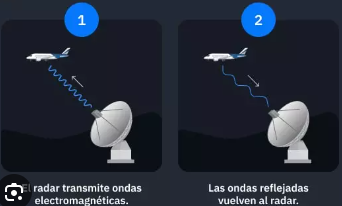
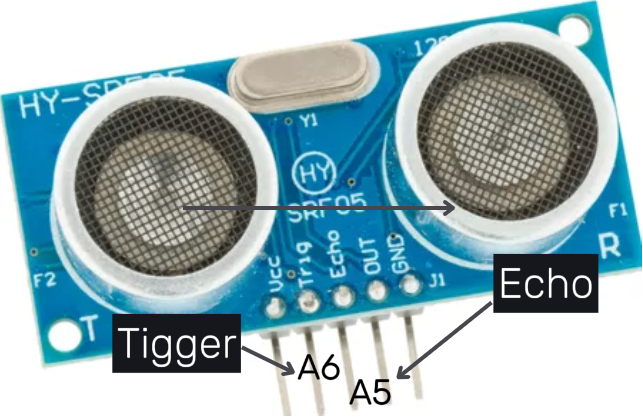
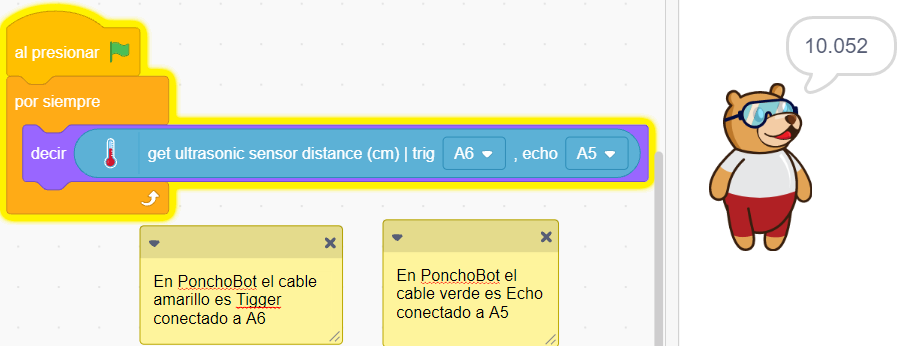

Medir distancia con PonchoBot
1°
Sensor de Ultrasonido HC-SR04
PonchoBot trae un sensor de ultrasonido conectado a los pines A5 y A6 en su placa Arduino Nano.

Los sensores ultrasónicos miden la distancia mediante el uso de ondas ultrasónicas, inaudible para el oído humano.
El cabezal Tigger emite una onda ultrasónica y el Echo recibe el rebote de la onda que retorna desde el objeto. Al ser conocida la velocidad de la onda y poder conocer el tiempo que tarda en retornar (a través de los bloques de Pictoblox) se puede calcular la distancia, despejada de la fórmula de velocidad: V=Espacio/Tiempo
2°

Programación
Su programación es muy sencilla en Pictoblox, ya que tiene un bloque que hace todo el trabajo:
-
Calcula la distancia con la siguiente fórmula:
Distancia = 1/2 × T × C (T: tiempo entre la emisión y la recepción. C: velocidad del sonido.
- Multiplica por 1/2 ya que T es el tiempo de recorrido de ida y vuelta.
- Nos entrega el resultado en centímetros.
3°
¡ A experimentar !
El desafío es que PonchoBot -a través de su sensor de ultrasonido- mida la distancia de objetos que se ubiquen al frente de él, a una distancia previamente conocida (medida con una regla milimetrada) para comprobar el nivel de precisión. A continuación una pequeña guía a tener en cuenta para cumplir con el desafío:
- Conectar el cable usb del Arduino Nano de PonchoBot a nuestra PC.
- Arrancar Pictoblox.
- Seleccionar desde el menú Board la placa Arduino Nano y el puerto de conexión.
- Construir el programa arrastrando los bloques correspondientes.
- Cargar el programa a la placa (Upload Firmware). No olvidar clic en banderita verde para disparar el programa!!
- Ubicar objetos a diferentes distancias (chequear dichas distancias con una regla milimetrada) y comparar con las distancias obtenidas.
- Contestar:
- ¿Qué medidas entrega el sensor cuando los objetos están muy cerca (menos de 3-4 cm)?
- ¿Qué medidas entrega el sensor cuando los objetos están muy lejos (más de 40-60 cm)?